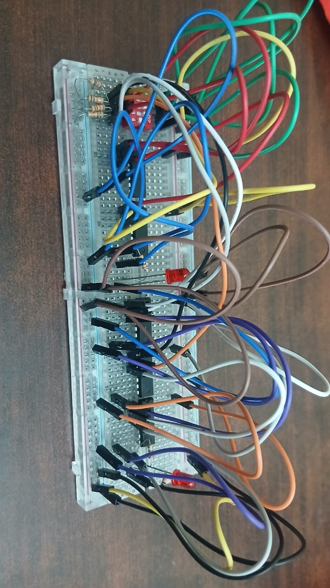
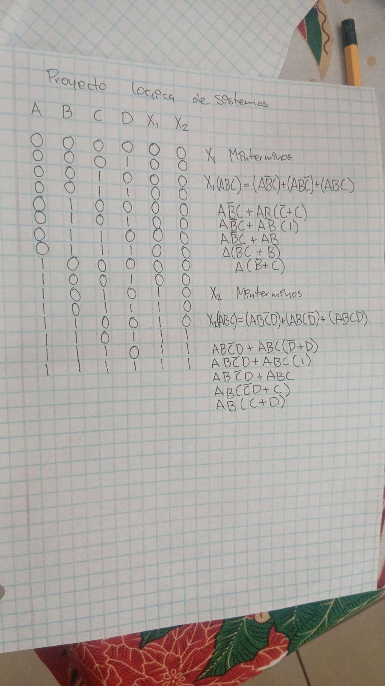

COMPETENCIAS ADQUIRIDAS ESTE SEMESTRE
Elaboracion de Tablas de Verdad 80%
Durante este curso aprendi sobre logica proposicional y como realizar tablas de verdad las cuales sirven de gran
manera para identificar un argumento valido o definir si es invalido
Elaboracion de Simplificaion de proposiciones logicas 60%
Con base con reglas de morgan y otras ya establecidas se realiza un procedimiento el cul nos sirve para resumirlas mismas
Elaboracion de Circuitos Logicos -45%
Durante el curso y como parte del proyecto final tube que crear circuitos logicos con protoboar conosidas como galletas
PROYECTOS REALIZADOS EN EL CURSO
CREACIÓN UN CIRCUIRTO LOGICO
Creación de un circuito logico para un invernadero el cual debe de estar debidamente realizado segun lineamientos
debemos entregar un documento y el circuito en fisico
LINK DEL VIDEO PENDIENTE

IMAGENES
 |
 |
 |